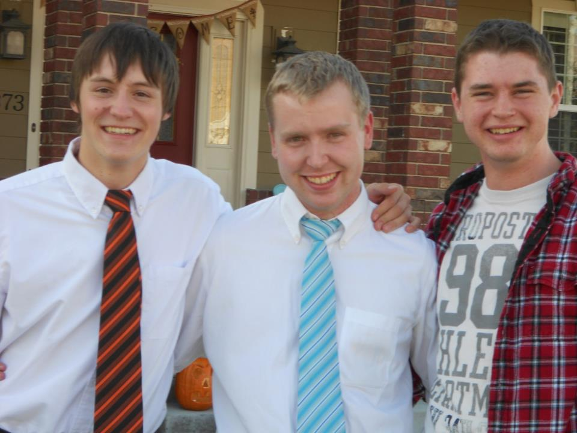
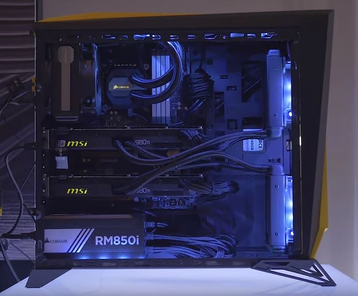

Who Is This Guy?

My name is Todd! I'm America, but I recently spent two years in Portugal where this photo was taken. I'm a pretty good guy. I like to dance, code, game, and hangout. I've been crazy about computers for quite a while. I've always been good at gamming, and I actualy met my Two best friends seen in this photo over here through our love of pc's video games and dance. Funny story, I moved right be for my senior year and I had to go to a new high school. I had heard about a ballroom dance team and though to my self "what losers." Turns out when I saw their first performance my thoughts immediently changed to "I gotta get on that team so I can dance with all those pretty girls!"  These two dorks were on team and we ended up becoming good friends. We spent tons of time working on computers, mostely breaking them, but sometimes fixing them. I've learned a lot about computers from them and built this PC.
